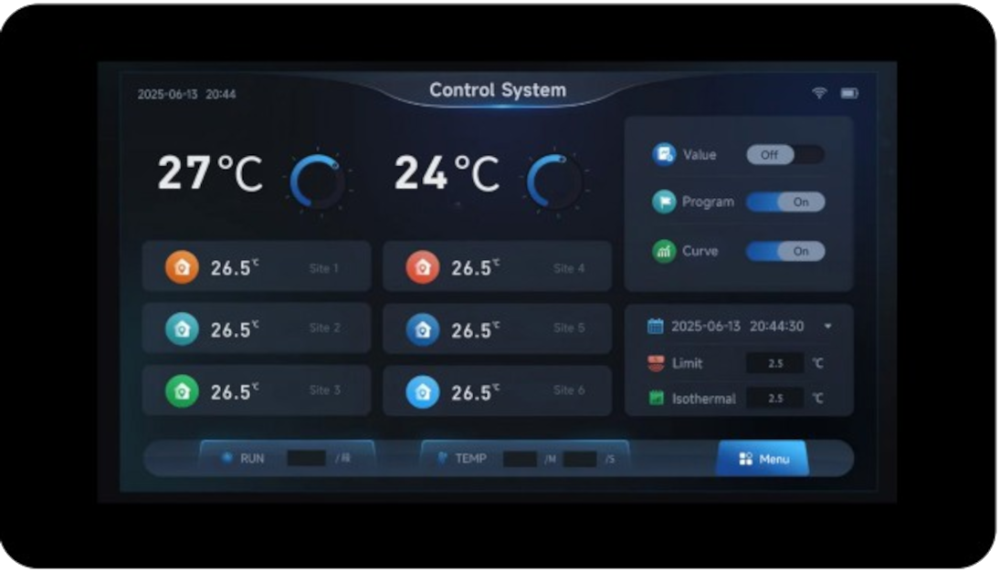
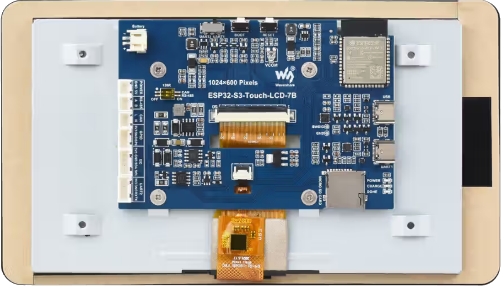

esp32s3-touch-lcd7
This page discusses issues unique to NuttX configurations for the ESP32S3-Touch-LCD-7 board.


The Waveshare ESP32-S3-Touch-LCD-7 is a feature rich board based on ESP32-S3-WROOM-1 module.
Features
ESP32-S3-16R8
USB-to-UART bridge via micro USB port
8MB SPI FLASH
8MB PSRAM
Onboard 7” LCD screen with 800 × 480 resolution, 65K colors
Onboard CAN, RS485, I2C interfaces, TF card slot, and integrated full-speed USB
Board documentation: https://docs.waveshare.com/ESP32-S3-Touch-LCD-7
BOARD LED
The board has three LEDs: POWER, CHARGE, DONE, but none programmable.
BOARD DISPLAY
The board has a 7-inch LCD:
ESP32-S3
LCD
Description
GPIO0
G3
Green data bit 3
GPIO1
R3
Red data bit 3
GPIO2
R4
Red data bit 4
GPIO3
VSYNC
Vertical sync signal
GPIO5
DE
Data enable signal
GPIO7
PCLK
Pixel clock signal
GPIO10
B7
Blue data bit 7
GPIO14
B3
Blue data bit 3
GPIO17
B6
Blue data bit 6
GPIO18
B5
Blue data bit 5
GPIO21
G7
Green data bit 7
GPIO38
B4
Blue data bit 4
GPIO39
G2
Green data bit 2
GPIO40
R7
Red data bit 7
GPIO41
R6
Red data bit 6
GPIO42
R5
Red data bit 5
GPIO45
G4
Green data bit 4
GPIO46
HSYNC
Horizontal sync signal
GPIO47
G6
Green data bit 6
GPIO48
G5
Green data bit 5
CH422G
LCD
EXIO2
DISP
Backlight enable pin
The panel is an EK9716 driven over a 16-bit parallel RGB565 bus by the LCD_CAM peripheral. Its timing is:
Parameter
Value
Resolution
800x480
Pixel clock
16 MHz
HSYNC pulse width
4
HSYNC back porch
8
HSYNC front porch
8
VSYNC pulse width
4
VSYNC back porch
8
VSYNC front porch
8
The RGB bus takes most of the usable pins, so the panel reset and the display enable are not wired to GPIOs. They hang off a CH422G I/O expander, reached over the I2C bus shared with the touch controller:
Signal
Connection
Description
SDA
GPIO8
I2C data, expander and touch
SCL
GPIO9
I2C clock, expander and touch
TP_RST
CH422G EXIO1
GT911 touch controller reset
DISP
CH422G EXIO2
Display and backlight enable
LCD_RST
CH422G EXIO3
Panel reset
SD_CS
CH422G EXIO4
TF card chip select
USB_SEL
CH422G EXIO5
USB / CAN transceiver select
A 800x480 RGB565 framebuffer is 768000 bytes and does not fit in internal RAM, so any configuration that drives the panel must also enable the onboard 8MB octal PSRAM and leave it in the common heap.
Configurations
All of the configurations presented below can be tested by running the following commands:
$ ./tools/configure.sh esp32s3-touch-lcd7:<config-name>
Where <subdir> is one of the following:
Configuration Directories
lcd
Brings up the onboard 7 inch 800x480 panel as a framebuffer character
driver at /dev/fb0, on top of the usbnsh console. The CH422G I/O
expander is used to take the panel out of reset and to switch the display
on once the framebuffer exists, and the PSRAM the framebuffer is allocated
from is enabled.
Note that the console is on UART0, GPIO43 and GPIO44, reached through the USB-to-UART bridge on the UART USB-C connector. It is deliberately not on the native USB peripheral, because that is the connector a USB host configuration drives.
apps/examples/fb is included to prove the panel out. It reports the
geometry of the framebuffer it found and then draws a series of nested
rectangles over the whole display:
nsh> fb
VideoInfo:
fmt: 11
xres: 800
yres: 480
nplanes: 1
PlaneInfo (plane 0):
fbmem: 0x3c050040
fblen: 1536000
stride: 1600
display: 0
bpp: 16
Mapped FB: 0x3c050040
Use consecutive fbmem2 = 0x3c10b840, yoffset = 480
0: ( 0, 0) (800,480)
1: ( 72, 43) (656,394)
2: (144, 86) (512,308)
3: (216,129) (368,222)
4: (288,172) (224,136)
5: (360,215) ( 80, 50)
Test finished
The framebuffer is in PSRAM, which is why fbmem is in the 0x3c000000
range, and fblen is 1536000 rather than 768000 because the driver is
double buffered by default.
usbnsh
Configures the NuttShell (nsh) located at apps/examples/nsh. This configuration enables a serial console over USB.
After flashing and reboot your board you should see in your dmesg logs:
$ sudo dmesg | tail
[ 3315.687219] usb 3-1.1.1: new full-speed USB device number 10 using xhci_hcd
[ 3315.778666] usb 3-1.1.1: New USB device found, idVendor=0525, idProduct=a4a7, bcdDevice= 1.01
[ 3315.778684] usb 3-1.1.1: New USB device strings: Mfr=1, Product=2, SerialNumber=3
[ 3315.778689] usb 3-1.1.1: Product: CDC/ACM Serial
[ 3315.778694] usb 3-1.1.1: Manufacturer: NuttX
[ 3315.778697] usb 3-1.1.1: SerialNumber: 0
[ 3315.829695] cdc_acm 3-1.1.1:1.0: ttyACM0: USB ACM device
[ 3315.829725] usbcore: registered new interface driver cdc_acm
[ 3315.829727] cdc_acm: USB Abstract Control Model driver for USB modems and ISDN adapters
You may need to press ENTER 3 times before the NSH show up.